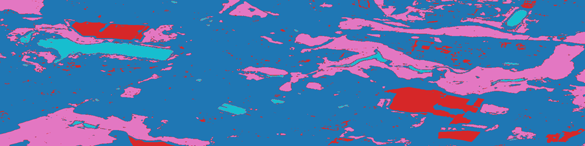
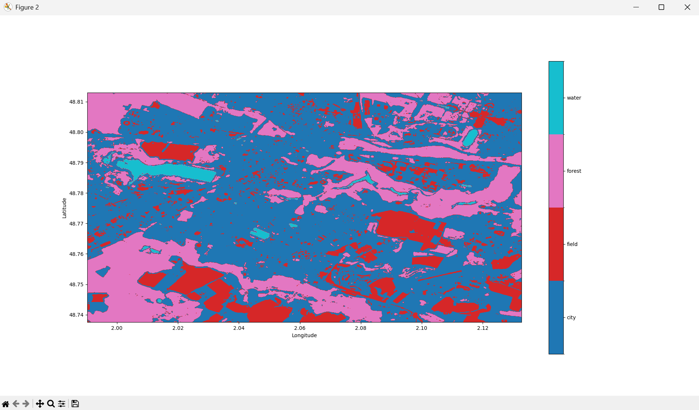
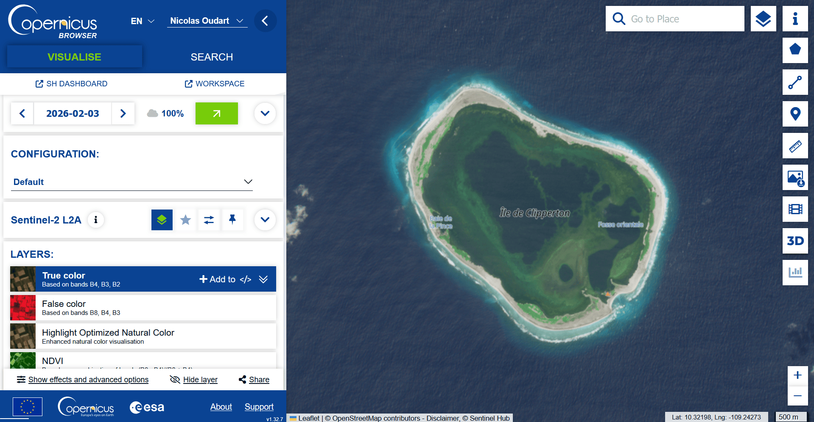

Prédiction de labels

Maintenant que nous avons validé les performances de notre classifieur en généralisation, nous pouvons l'utiliser avec confiance pour prédire les labels de tous les pixels de notre image "raster". PyRaTe permet à la fois la prédiction et l'affichage des labels prédits.
Prédire avec un classifieur
Avec PyRaTe, pour prédire les labels des pixels avec le classifieur que vous avez entrainé, utilisez la commande suivante :
img_label,labels_code = PyRaTe.prediction(classifier_pipeline,band_list)
Il y a 2 variables de sortie :
-
img_labelest une matrice Numpy contenant des nombres entiers, correspondant aux différents labels. -
labels_codeest une matrice Numpy contenant les différents labels dans l'ordre des nombres entiers deimg_label.
Ces 2 sorties, associées aux données de géoréférencement du "raster" permettent d'afficher les prédictions pour notre image.
Vous pouvez également appliquer cette fonction à de nouvelles images à classifier.
Affichage des labels
Avec PyRaTe, pour afficher les labels prédits pour une image, avec le géoréférencement, utilisez la commande suivante :
PyRaTe.label_display(img_label,band_bounds,labels_code)
Voici la figure qui s'affiche alors :

Les différentes couleurs permettent d'identifier les 4 labels ("forest", "field", "water" et "city").
Nous avons obtenu le résultat attendu !
| Nota Bene |
|---|
| Si dans le cadre de vos projets de télédétection, vous voulez déterminer le nombre de pixels assignés à un label pour un calcul de surface, c'est possible. |
Il suffit avec Numpy de calculer le nombre d'éléments dans la matrice img_label égaux à l'entier correspondant au label à dénombrer. |
Pour aller plus loin ...
Lors de vos projets, vous devrez choisir vous même les images satellites dont vous aurez besoin.
Pour faire ce choix, vous devrez vous poser les questions suivantes :
-
Quel satellite ou constellation de satellites choisir ? (Les capteurs qu'il contient, les temps de revisite, la disponibilité des données pour les dates cherchées, etc.).
-
Quelles bandes de fréquences choisir ? (Les bandes pertinentes pour détecter les surfaces que vous voulez étudier, avec la résolution dont vous avez besoin, etc.).
-
Quelles régions et quelles dates choisir ? (La même saison ou des saisons différentes, la même région ou des régions différentes, etc.).
Pour trouver des images satellites "raster" de satellites Sentinel au format GeoTIFF, pour une sélection de bandes de fréquences, vous pouvez utiliser le moteur de recherche de Copernicus :
Pour télécharger les GeoTIFF bruts des différentes bandes, vous devrez d'abord créer un compte.
Ensuite, il faut cliquer sur le bouton "Download image", et dans la fenêtre qui s'ouvre cliquer sur "Analytical".
Vous pouvez alors sélectionner le format, la résolution et les bandes de l'image à télécharger. Par défaut, nous vous recommandons de télécharger :
-
TIFF encodé sur 16 bits.
-
Résolution "HIGH".
-
Système de coordonnées WGS84.
-
Les bandes dont vous avez besoin dans la catégorie "Raw".

Vous pouvez bien entendu choisir des images satellites de type "raster" provenant de n'importe quel satellite et les utiliser avec PyRaTe.